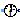
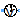
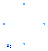

This package hosts sensors for quasi stationary single phase circuits. Quasi stationary theory for single phase circuits can be found in the references.
Extends from Modelica.Icons.SensorsPackage (Icon for packages containing sensors).
| Name | Description |
|---|---|
|  FrequencySensor | Frequency sensor |
|  PotentialSensor | Potential sensor |
| Voltage sensor | |
| Current sensor | |
| Power sensor |
This sensor can be used to measure the frequency of the reference system.
PotentialSensor, VoltageSensor, CurrentSensor, PowerSensor
Extends from Interfaces.AbsoluteSensor (Partial potential sensor).
| Type | Name | Description |
|---|---|---|
| PositivePin | pin | Pin |
| output RealOutput | y |
model FrequencySensor "Frequency sensor" extends Interfaces.AbsoluteSensor; import Modelica.Constants.pi;Blocks.Interfaces.RealOutput y; equation 2*pi*y = omega;end FrequencySensor;
This sensor can be used to measure the complex potential.
VoltageSensor, CurrentSensor, PowerSensor
Extends from Interfaces.AbsoluteSensor (Partial potential sensor).
| Type | Name | Description |
|---|---|---|
| PositivePin | pin | Pin |
| output ComplexOutput | y |
model PotentialSensor "Potential sensor" extends Interfaces.AbsoluteSensor;ComplexBlocks.Interfaces.ComplexOutput y; equation y = pin.v;end PotentialSensor;

This sensor can be used to measure the complex voltage.
PotentialSensor, CurrentSensor, PowerSensor
Extends from Interfaces.RelativeSensor (Partial voltage / current sensor).
| Type | Name | Description |
|---|---|---|
| PositivePin | pin_p | Positive pin |
| NegativePin | pin_n | Negative pin |
| output ComplexOutput | y |
model VoltageSensor "Voltage sensor" extends Interfaces.RelativeSensor; equation i = Complex(0); y = v;end VoltageSensor;
This sensor can be used to measure the complex current.
PotentialSensor, VoltageSensor, PowerSensor
Extends from Interfaces.RelativeSensor (Partial voltage / current sensor).
| Type | Name | Description |
|---|---|---|
| PositivePin | pin_p | Positive pin |
| NegativePin | pin_n | Negative pin |
| output ComplexOutput | y |
model CurrentSensor "Current sensor" extends Interfaces.RelativeSensor; equation v = Complex(0); y = i;end CurrentSensor;

This sensor can be used to measure the complex apparent power.
PotentialSensor, VoltageSensor, CurrentSensor,
| Type | Name | Description |
|---|---|---|
| PositivePin | currentP | |
| NegativePin | currentN | |
| PositivePin | voltageP | |
| NegativePin | voltageN | |
| output ComplexOutput | y |
model PowerSensor "Power sensor" import Modelica.ComplexMath.conj;Interfaces.PositivePin currentP; Interfaces.NegativePin currentN; Interfaces.PositivePin voltageP; Interfaces.NegativePin voltageN; output Modelica.SIunits.ComplexCurrent i; output Modelica.SIunits.ComplexVoltage v;Modelica.ComplexBlocks.Interfaces.ComplexOutput y; equation Connections.branch(currentP.reference, currentN.reference); currentP.reference.gamma = currentN.reference.gamma; Connections.branch(voltageP.reference, voltageN.reference); voltageP.reference.gamma = voltageN.reference.gamma; Connections.branch(currentP.reference, voltageP.reference); currentP.reference.gamma = voltageP.reference.gamma; currentP.i + currentN.i = Complex(0); currentP.v - currentN.v = Complex(0); i = currentP.i; voltageP.i + voltageN.i = Complex(0); voltageP.i = Complex(0); v = voltageP.v - voltageN.v; //P + j*Q = v * conj(i); y = v*conj(i);end PowerSensor;